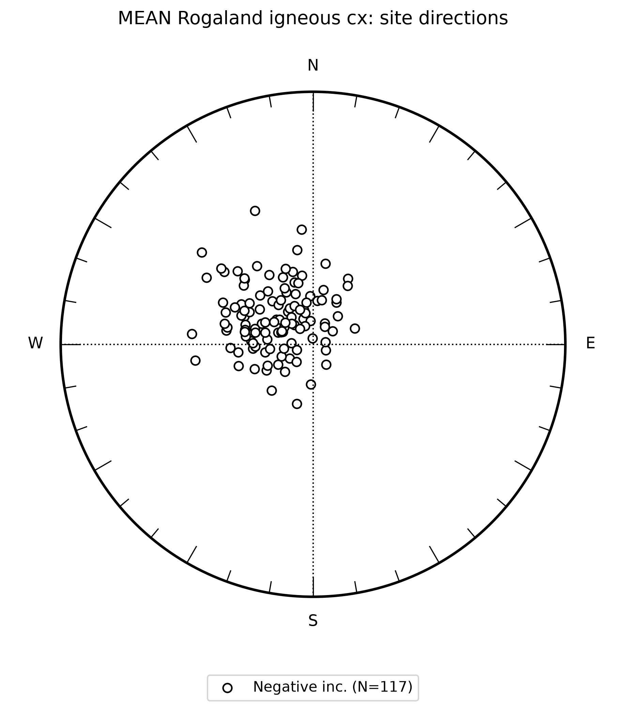
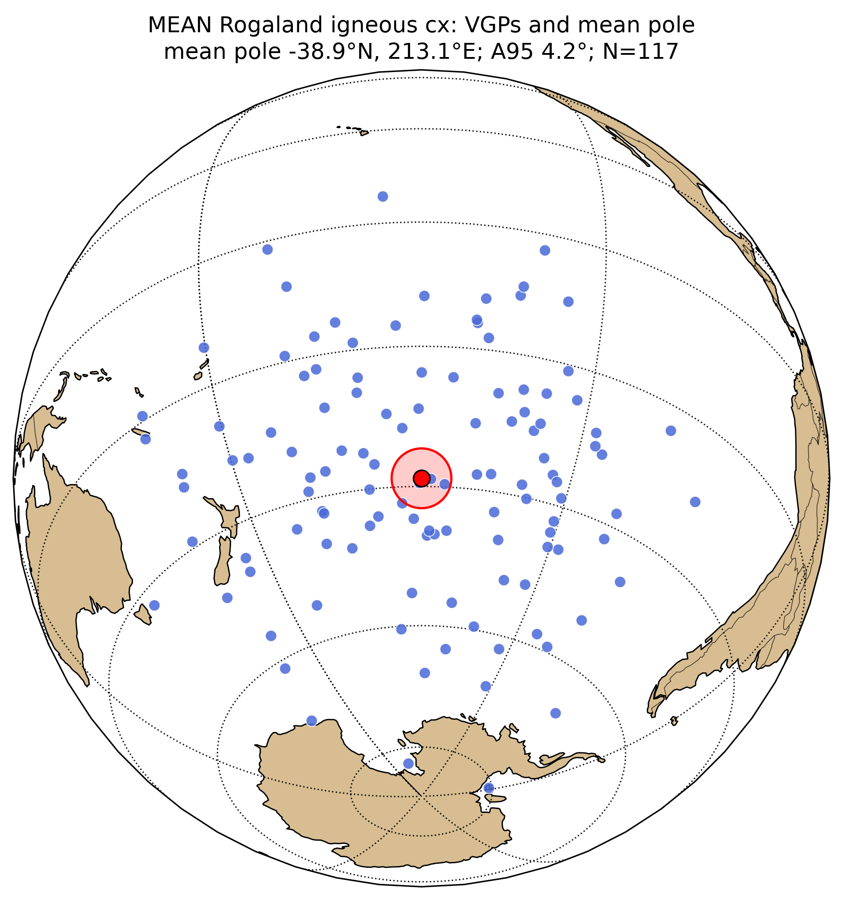
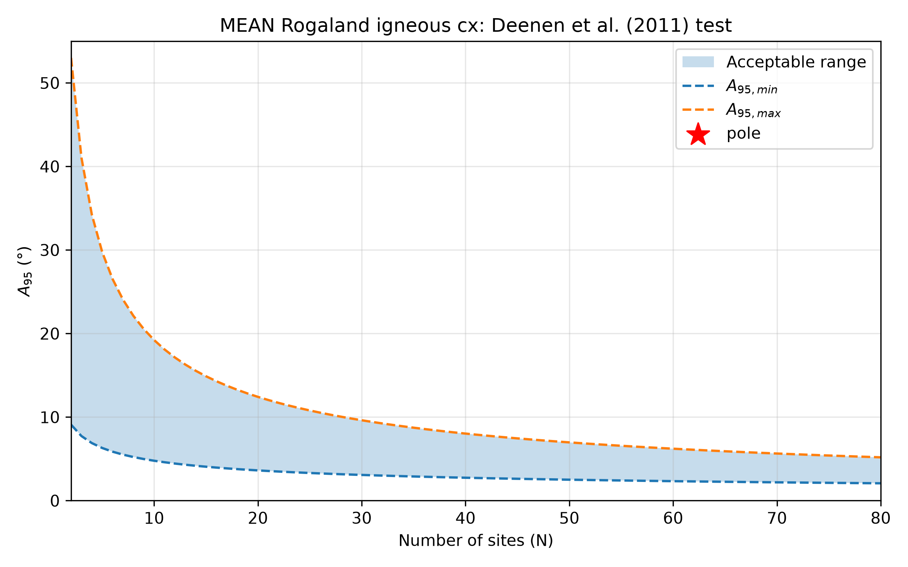

MEAN Rogaland igneous cx
Baltica Precambrian pole assessment page — database-linked v6 / assessment scaffold
Pole information
Site-level link status
Scientific assessment scaffold
Site-level data
| site | dir_dec | dir_inc | dir_k | dir_alpha95 | dir_n_samples | vgp_lat | vgp_lon | authors | comment |
|---|---|---|---|---|---|---|---|---|---|
| BK9 | 304.1 | -75.8 | 251 | 4.8 | 5 | -39 | 214.7 | Walderhaug et al. (2007) | |
| BK29 | 316.7 | -70.9 | 243 | 4.9 | 5 | -29 | 212.5 | Walderhaug et al. (2007) | |
| BK30 | 292.3 | -79.5 | 83 | 10.1 | 4 | -46.9 | 214.2 | Walderhaug et al. (2007) | |
| BK56 | 300.9 | -79.2 | 81 | 8.5 | 5 | -44.5 | 211.4 | Walderhaug et al. (2007) | convert "text" to numbers |
| BK57 | 5.6 | -75.9 | 60 | 9.9 | 5 | -32.1 | 183.1 | Brown et al. (2024) | |
| BK58 | 350.8 | -67.5 | 204 | 5.4 | 5 | -19.2 | 192.2 | Brown et al. (2024) | |
| BK59 | 250.8 | -84.5 | 170 | 5.2 | 6 | -60.4 | 207.3 | Brown et al. (2024) | |
| BK60 | 239 | -81.2 | 248 | 4.9 | 5 | -63.4 | 220.3 | Brown et al. (2024) | |
| BK61 | 354.9 | -88.1 | 28 | 11.6 | 7 | -54.7 | 186.6 | Brown et al. (2024) | |
| BK68 | 306.5 | -76.6 | 773 | 2.8 | 5 | -39.5 | 212.6 | Brown et al. (2024) | |
| BK69 | 29.3 | -82.3 | 242 | 4.3 | 6 | -44.8 | 175.7 | Brown et al. (2024) | |
| BK70 | 10.9 | -72.2 | 156 | 7.4 | 4 | -26.1 | 179.5 | Brown et al. (2024) | |
| BK71 | 322.6 | -76.8 | 79 | 8.6 | 5 | -36.5 | 204.8 | Brown et al. (2024) | |
| 6 | 28 | -66 | 11 | 16 | 9 | -19.2058 | 166.706 | Brown et al. (2024) | |
| 8 | 273 | -70 | 58 | 8.9 | 6 | -42.1875 | 239.025 | Brown et al. (2024) | |
| 11 | 240 | -77 | 53 | 8.4 | 7 | -62.0045 | 236.925 | Brown et al. (2024) | |
| Host 5 | 292 | -66 | 2 | -30.5428 | 231.656 | Brown et al. (2024) | |||
| Host 9 | 292 | -65 | 736 | 2.2 | 7 | -29.2569 | 232.561 | Brown et al. (2024) | |
| Host 15 | 222 | -70 | 2 | -66.6163 | 268.835 | Brown et al. (2024) | |||
| TE1 | 240.8 | -72.8 | 51 | 8.7 | 6 | -59.1 | 250 | Brown et al. (2024) | |
| TE2 | 286.2 | -67.2 | 375 | 6.4 | 3 | -33.9 | 234.5 | Brown et al. (2024) | |
| TE10 | 288.7 | -78.1 | 190 | 6.7 | 4 | -46 | 218.4 | Brown et al. (2024) | |
| TE12 | 276.1 | -75.1 | 58 | 8.2 | 6 | -46.5 | 229.1 | Brown et al. (2024) | |
| TE43 | 339.7 | -81.2 | 221 | 8.3 | 3 | -41.9 | 194.3 | Brown et al. (2024) | |
| TE44 | 33.7 | -83.2 | 143 | 10.3 | 3 | -46.6 | 175.7 | Brown et al. (2024) | |
| TE46 | 8.8 | -63.6 | 67 | 8.3 | 6 | -13.8 | 180.1 | Brown et al. (2024) | |
| TE47 | 345 | -78.6 | 993 | 2.5 | 4 | -36.9 | 193.4 | Brown et al. (2024) | |
| TE48 | 327.1 | -76.2 | 65 | 9.6 | 5 | -34.8 | 203.4 | Brown et al. (2024) | |
| TE49 | 41.1 | -78 | 191 | 5.6 | 5 | -39 | 167.1 | Brown et al. (2024) | |
| TE50 | 55.9 | -82.4 | 196 | 5.5 | 5 | -48.3 | 167.7 | Brown et al. (2024) | |
| TE54 | 334.3 | -76.3 | 245 | 5.9 | 4 | -33.9 | 199.6 | Brown et al. (2024) | |
| BK79 | 312.7 | -66.6 | 83 | 6.7 | 7 | -24.3 | 218.3 | Brown et al. (2024) | |
| BK80 | 290.1 | -59.7 | 108 | 6.5 | 6 | -24.6 | 238.1 | Brown et al. (2024) | |
| BK81 | 29.4 | -74.6 | 102 | 5.5 | 8 | -31.7 | 170.3 | Brown et al. (2024) | |
| TE3 | 267.6 | -63.2 | 110 | 5.3 | 8 | -37.9 | 250.6 | Brown et al. (2024) | |
| TE4 | 344.3 | -65.6 | 101 | 6 | 7 | -16.8 | 197.4 | Brown et al. (2024) | |
| TE5 | 274.9 | -50.2 | 186 | 3.8 | 9 | -23.6 | 255.2 | Brown et al. (2024) | |
| TE6 | 147.2 | -82.3 | 153 | 4.9 | 7 | -69.5 | 162.6 | Brown et al. (2024) | |
| TE8 | 318.6 | -73.1 | 154 | 3.9 | 10 | -31.5 | 210.2 | Brown et al. (2024) | |
| TE9 | 299.2 | -63.4 | 194 | 4 | 8 | -24.9 | 229.3 | Brown et al. (2024) | |
| TE11 | 340.6 | -72.8 | 170 | 5.9 | 5 | -27.6 | 197.8 | Brown et al. (2024) | |
| BK21 | 319.4 | -67.5 | 39 | 14.9 | 5 | -23.8 | 213 | Brown et al. (2024) | |
| BK22 | 282 | -67.5 | 155 | 7.4 | 4 | -36.1 | 236.4 | Brown et al. (2024) | |
| BK23 | 299.8 | -75.5 | 27 | 14.9 | 5 | -39.7 | 217.1 | Brown et al. (2024) | |
| BK24 | 321.5 | -78.8 | 2 | -39.8 | 215.4 | Brown et al. (2024) | |||
| BK51 | 302.8 | -65.5 | 24 | 14.3 | 5 | -23 | 218.7 | Brown et al. (2024) | |
| BK52 | 292 | -72.1 | 63 | 8.5 | 5 | -37.6 | 225.4 | Brown et al. (2024) | |
| BK53 | 332.7 | -71.1 | 26 | 12 | 7 | -26.2 | 202.8 | Brown et al. (2024) | |
| BK54 | 343.3 | -69.1 | 139 | 5.7 | 6 | -21.9 | 196.8 | Brown et al. (2024) | |
| BK55 | 323.9 | -72.4 | 56 | 10.3 | 5 | -29.6 | 207.3 | Brown et al. (2024) | |
| BK152 | 315.6 | -81.4 | 572 | 2.6 | 5 | -45 | 203.1 | Brown et al. (2024) | |
| BK1 | 295.2 | -61.9 | 62 | 10.2 | 4 | − 24.9 | 232.9 | Brown & McEnroe (2015) | |
| BK2 | 309.2 | -52.6 | 116 | 7.4 | 4 | − 11.0 | 227.5 | Brown & McEnroe (2015) | |
| BK3 | 335.8 | -66.2 | 110 | 5.8 | 7 | − 18.9 | 203.1 | Brown & McEnroe (2015) | |
| BK4A | 303.1 | -69.4 | 88 | 9.8 | 4 | − 31.9 | 222.4 | Brown & McEnroe (2015) | |
| BK4B | 324.4 | -58.7 | 228 | 11.7 | 2 | − 13.5 | 217.4 | Brown & McEnroe (2015) | |
| BK5 | 309.6 | -42.3 | 48 | 0 | 5 | − 2.9 | 230.7 | Brown & McEnroe (2015) | |
| BK7 | 346.2 | -69.7 | 31 | 12.1 | 6 | − 24.0 | 194.9 | Brown & McEnroe (2015) | |
| BK8 | 296.9 | -67 | 425 | 3.7 | 5 | − 29.8 | 228.2 | Brown & McEnroe (2015) | |
| BK10 | 336.4 | -41.9 | 145 | 6.4 | 5 | 3.7 | 207.5 | Brown & McEnroe (2015) | |
| BK11 | 327.8 | -63.4 | 77 | 6.4 | 8 | − 16.8 | 209.5 | Brown & McEnroe (2015) | |
| BK12 | 354.3 | -52.3 | 67 | 9.8 | 4 | − 1.6 | 190.9 | Brown & McEnroe (2015) | |
| BK13 | 284.8 | -70.6 | 89 | 9.8 | 4 | − 38.4 | 231.5 | Brown & McEnroe (2015) | |
| BK14 | 296.1 | -65.3 | 57 | 8.9 | 6 | − 28.2 | 230 | Brown & McEnroe (2015) | |
| BK16 | 294.9 | -57.7 | 331 | 4.2 | 5 | − 20.9 | 235.9 | Brown & McEnroe (2015) | |
| BK20 | 69.4 | -75.6 | 62 | 8.6 | 6 | − 42.3 | 150.9 | Brown & McEnroe (2015) | |
| BK31 | 266.1 | -70.5 | 89 | 8.1 | 5 | − 45.8 | 242 | Brown & McEnroe (2015) | |
| BK32 | 290.8 | -79 | 398 | 4.6 | 4 | − 48.0 | 216.3 | Brown & McEnroe (2015) | |
| BK34 | 339 | -81.3 | 238 | 3.6 | 8 | − 42.2 | 194.5 | Brown & McEnroe (2015) | |
| BK38 | 114.9 | -85.5 | 37 | 8.6 | 9 | − 61.2 | 169.1 | Brown & McEnroe (2015) | |
| BK39 | 313.4 | -59.5 | 58 | 8.9 | 6 | − 16.2 | 221.5 | Brown & McEnroe (2015) | |
| BK40 | 293.1 | -79.1 | 106 | 7.5 | 5 | − 46.2 | 214.9 | Brown & McEnroe (2015) | |
| BK41 | 302.1 | -48.8 | 63 | 8.5 | 6 | − 10.4 | 234.7 | Brown & McEnroe (2015) | |
| BK42 | 346.1 | -79.7 | 579 | 3.2 | 5 | − 40.4 | 192.2 | Brown & McEnroe (2015) | |
| BK43 | 356.6 | -74.4 | 142 | 5.6 | 6 | − 30.8 | 187.9 | Brown & McEnroe (2015) | |
| BK44 | 195.2 | -70.1 | 47 | 9.9 | 8 | − 80.6 | 297.3 | Brown & McEnroe (2015) | |
| BK45 | 339.2 | -78.1 | 814 | 2.4 | 6 | − 36.6 | 196.2 | Brown & McEnroe (2015) | |
| BK46 | 279.1 | -61.5 | 98 | 6.8 | 6 | − 31.1 | 244.3 | Brown & McEnroe (2015) | |
| BK47 | 262.2 | -51.1 | 98 | 7.8 | 5 | − 30.6 | 264.4 | Brown & McEnroe (2015) | |
| BK48 | 225.8 | -77.3 | 93 | 0 | 6 | − 68.1 | 238.2 | Brown & McEnroe (2015) | |
| BK62 | 333.2 | -69.7 | 59 | 16.2 | 3 | − 24.3 | 203.4 | Brown & McEnroe (2015) | |
| BK66 | 354 | -82.4 | 159 | 5.3 | 6 | − 43.7 | 188.4 | Brown & McEnroe (2015) | |
| Bk67 | 260.3 | -74.4 | 61 | 7.9 | 6 | − 51.9 | 237.4 | Brown & McEnroe (2015) | |
| BK73 | 283.7 | -74.1 | 42 | 11.9 | 5 | − 43.9 | 227.9 | Brown & McEnroe (2015) | |
| BK74 | 30.5 | -68.1 | 243 | 4.9 | 5 | − 23.9 | 165.7 | Brown & McEnroe (2015) | |
| BK75 | 336.7 | -83.6 | 65 | 7.5 | 7 | − 46.6 | 193.6 | Brown & McEnroe (2015) | |
| BK76 | 310.2 | -60.5 | 68 | 9.3 | 5 | − 18.2 | 223.4 | Brown & McEnroe (2015) | |
| BK77 | 281.2 | -61.6 | 86 | 7.4 | 5 | − 30.3 | 242.7 | Brown & McEnroe (2015) | |
| BK78 | 27.3 | -73.6 | 70 | 7.3 | 7 | − 29.9 | 170.7 | Brown & McEnroe (2015) | |
| BK83 | 253.8 | -64.9 | 57 | 13.4 | 3 | − 46.2 | 257.7 | Brown & McEnroe (2015) | |
| BK84 | 294.6 | -73 | 59 | 0 | 4 | − 39.1 | 223.6 | Brown & McEnroe (2015) | |
| BK86 | 276.7 | -68.1 | 84 | 7.5 | 5 | − 38.8 | 237.1 | Brown & McEnroe (2015) | |
| BK88 | 309.5 | -51 | 363 | 3.2 | 6 | − 9.4 | 228.1 | Brown & McEnroe (2015) | |
| BK90 | 313.9 | -80.5 | 456 | 3.2 | 5 | − 43.9 | 204.7 | Brown & McEnroe (2015) | |
| BK91 | 281.4 | -71 | 141 | 5.8 | 5 | − 40.1 | 232.7 | Brown & McEnroe (2015) | |
| BK92 | 267.9 | -71.4 | 20 | 17.4 | 5 | − 46.8 | 240.6 | Brown & McEnroe (2015) | |
| BK94 | 280.3 | -67.6 | 518 | 5.4 | 3 | − 36.8 | 237.6 | Brown & McEnroe (2015) | |
| BK95 | 223.4 | -82.2 | 102 | 6.8 | 5 | − 67.4 | 214.4 | Brown & McEnroe (2015) | |
| BK96 | 183.4 | -77.1 | 408 | 3.3 | 6 | − 84.3 | 200.2 | Brown & McEnroe (2015) | |
| BK97 | 320.1 | -83.5 | 256 | 3.8 | 7 | − 49.4 | 198.7 | Brown & McEnroe (2015) | |
| BK98 | 307.9 | -78.7 | 186 | 6.6 | 5 | − 43.7 | 209.9 | Brown & McEnroe (2015) | |
| BK99 | 271 | -70.6 | 55 | 9.3 | 5 | − 43.8 | 239.3 | Brown & McEnroe (2015) | |
| BK100 | 263.8 | -76 | 70 | 7.4 | 6 | − 52.0 | 232.5 | Brown & McEnroe (2015) | |
| BK101 | 11 | -75.5 | 106 | 7.7 | 4 | − 31.5 | 180.5 | Brown & McEnroe (2015) | |
| BK102 | 314.1 | -55.7 | 359 | 3.6 | 5 | − 12.2 | 222.4 | Brown & McEnroe (2015) | |
| BK103 | 273.6 | -83 | 176 | 5.2 | 5 | − 55.2 | 210.9 | Brown & McEnroe (2015) | |
| BK104 | 313.8 | -59.1 | 399 | 3.4 | 5 | − 15.7 | 221.3 | Brown & McEnroe (2015) | |
| BK105 | 350.5 | -58.9 | 108 | 5.9 | 6 | − 8.5 | 193.6 | Brown & McEnroe (2015) | |
| BK106 | 79.8 | -85.9 | 401 | 2.8 | 7 | − 56.2 | 171.8 | Brown & McEnroe (2015) | |
| BK107 | 350.9 | -76.4 | 97 | 6.3 | 6 | − 32.9 | 191 | Brown & McEnroe (2015) | |
| BK110 | 263.8 | -65.6 | 170 | 5.9 | 5 | − 42.7 | 251.2 | Brown & McEnroe (2015) | |
| BK111 | 247 | -69.5 | 275 | 4.6 | 5 | − 54.2 | 256.3 | Brown & McEnroe (2015) | |
| BK112 | 249.3 | -79.1 | 203 | 5.4 | 5 | − 59.6 | 227.9 | Brown & McEnroe (2015) | |
| BK113 | 261.6 | -80.5 | 85 | 8.3 | 5 | − 56.4 | 220.9 | Brown & McEnroe (2015) | |
| BK114 | 283.1 | -60.5 | 60 | 9.9 | 5 | − 28.4 | 242.4 | Brown & McEnroe (2015) | |
| BK115 | 340.1 | -64 | 246 | 4.3 | 6 | − 15.4 | 200.6 | Brown & McEnroe (2015) | |
| BK116 | 244.9 | -73.8 | 145 | 5.6 | 6 | − 58.1 | 245.8 | Brown & McEnroe (2015) |
Source workbook: data/site_level_data_site_comments_added.xlsx;
sheet: MEAN Rogaland igneous cx.
This table is regenerated automatically from the workbook.
Site-level direction scatter
Tilt-corrected site directions for MEAN Rogaland igneous cx. Filled and open symbols distinguish positive and negative inclinations. This plot shows the scatter of individual site directions behind the mean pole.

Site-level VGPs and mean pole
Site-level VGPs are plotted on an orthographic globe together with the Fisher mean pole and its circular A95 confidence region. This is the Laurentia-style view needed to inspect the spatial scatter of the site poles.

Paleosecular variation
The Deenen et al. (2011) diagnostic compares the pole A95 with the expected range for the number of site-level VGPs. This provides a first-order PSV-style check.
